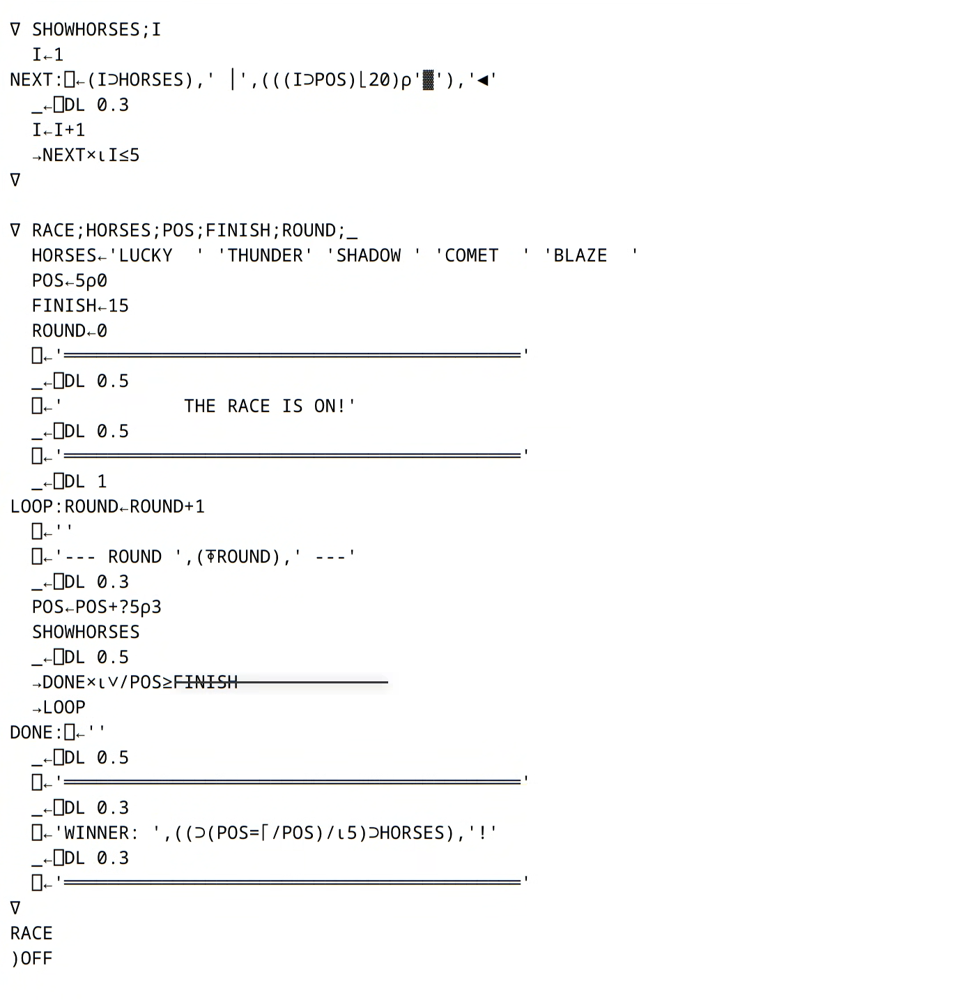
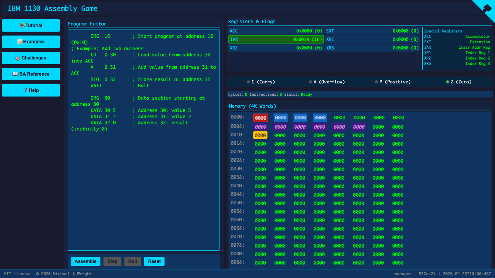
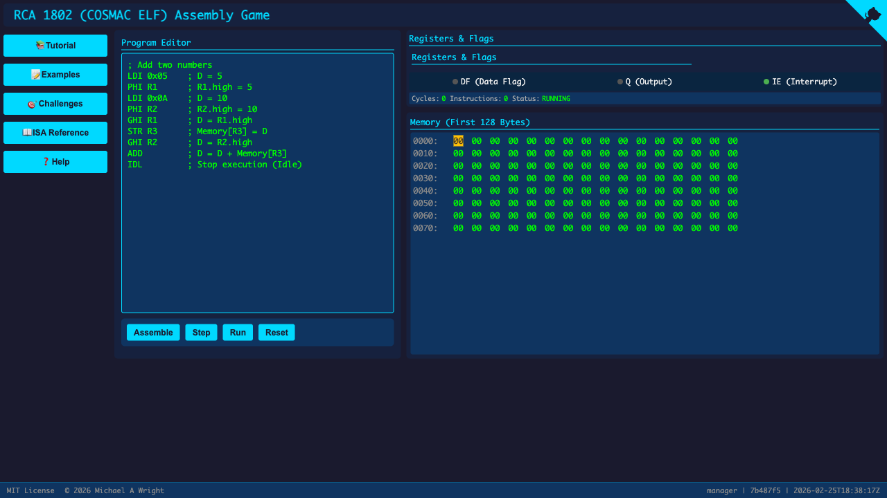
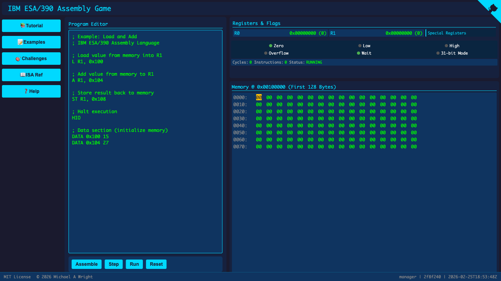
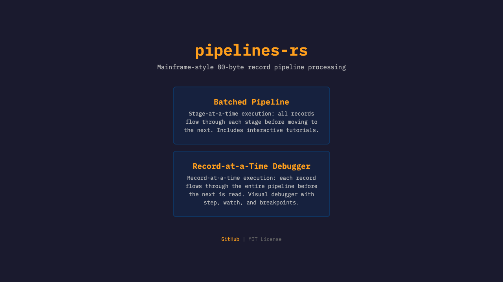

sw-comp-history / demos
Software Wrighter's Computer History
Browser demos and source projects for recreating historical computing systems: APL terminals, card-era batch processing, minicomputer consoles, mainframe assembly, and early CMOS microprocessor I/O.
JOB SWCHIST CLASS=A MSGCLASS=H
//CATALOG EXEC PGM=INDEX
LOADING REPOSITORY FAMILY...
APL\360 LANGUAGE + TERMINAL DEMOS
IBM 1130 EMULATOR + FORTH TOOLCHAIN
RCA CDP1802 COSMAC EMULATOR + I/O
IBM S/390 MAINFRAME ASSEMBLY + BATCH
OTHER FUTURE DEMOS
READY.
6live pages
17repos indexed
2026active builds
Live Demos
These projects run directly in the browser from GitHub Pages.
APL\360
IBM 1130

IBM 1130 System Emulator
ActiveAn educational IBM 1130 environment with assembly, console, keypunch, and printer views.
RCA CDP1802

RCA COSMAC 1802 Assembly Emulator
ActiveAn interactive RCA 1802 instruction-set demo for the early CMOS microprocessor used in spacecraft and hobby systems.
CDP1802 I/O
CDP1802 I/O Live Demo
ActiveYew/WASM demos that visualize joystick timing, TV memory display patterns, and period-style CDP1802 I/O.
IBM S/390

IBM ESA/390 Assembly Emulator
ActiveA browser-based assembly game for learning the ESA/390 instruction set architecture.

Historical Batch Pipelines
ActiveA Rust and web demo of fixed-width, 80-byte record processing inspired by card-era batch systems.
Toolchain Repos
Libraries, emulators, assemblers, ISA descriptions, and language experiments behind the browser demos.
Opcode encoding, decoding, and disassembly for the RCA CDP1802.
Two-pass CDP1802 assembler from text source to instruction bytes.
Instruction execution semantics for the RCA CDP1802 / COSMAC 1802.
Browser-facing I/O demos built on the CDP1802 emulator.
Code generation surface for lowering TIR to CDP1802 instructions.
CDP1802 ABI, calling convention, and register-class model.
IBM 1130 instruction-set description, encoding, and decoding.
Assembler work for IBM 1130 source and instruction bytes.
Instruction execution semantics for the IBM 1130.
A FORTH frontend targeting the IBM 1130, inspired by Moore's first FORTH.
Code generation surface for the IBM 1130 toolchain.
IBM 1130 target description, ABI, and register-class model.